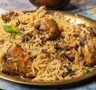

Chicken Biryani

Chicken Biryani is a flavorful and aromatic rice dish that originated in the Indian subcontinent. It is made by layering marinated chicken with fragrant basmati rice, spices, and herbs, then cooking everything together to perfection. The result is a deliciously spiced and satisfying meal that is enjoyed by people all over the world.
This dish is often served at festive occasions and family gatherings, thanks to its rich taste and beautiful presentation. Chicken Biryani can be customized with different proteins or vegetables, making it a versatile favorite in many households.
Ingredients
- Basmati rice
- Chicken pieces
- Yogurt
- Onion
- Garlic
- Ginger
- Tomato
- Biryani masala or mixed spices
- Green chilies
- Fresh coriander and mint leaves
- Ghee or oil
- Saffron (optional)
- Salt
Steps
- Wash and soak basmati rice for 30 minutes. Drain and set aside.
- Marinate chicken with yogurt, ginger-garlic paste, biryani masala, and salt. Let it rest for at least 30 minutes.
- Fry sliced onions in ghee or oil until golden brown. Remove half for garnishing.
- Add marinated chicken to the pan and cook until the chicken is browned and cooked through.
- Add chopped tomatoes, green chilies, coriander, and mint leaves. Cook for a few minutes.
- In a separate pot, boil water with salt and cook the soaked rice until 70% done. Drain.
- Layer the chicken mixture and rice in a large pot. Sprinkle fried onions and saffron milk (if using) on top.
- Cover and cook on low heat (dum) for 20–25 minutes.
- Let it rest for 10 minutes before serving. Fluff gently and serve hot.
Home